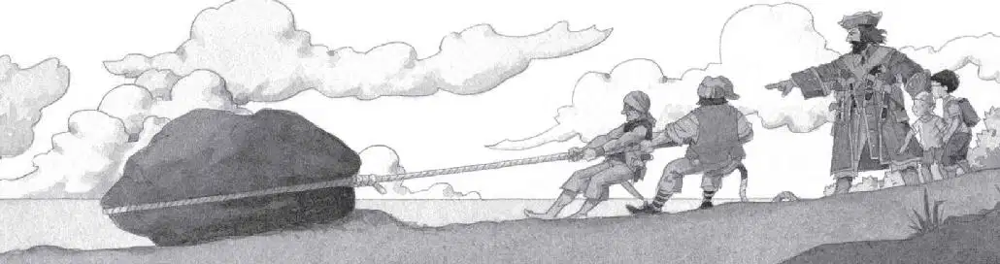
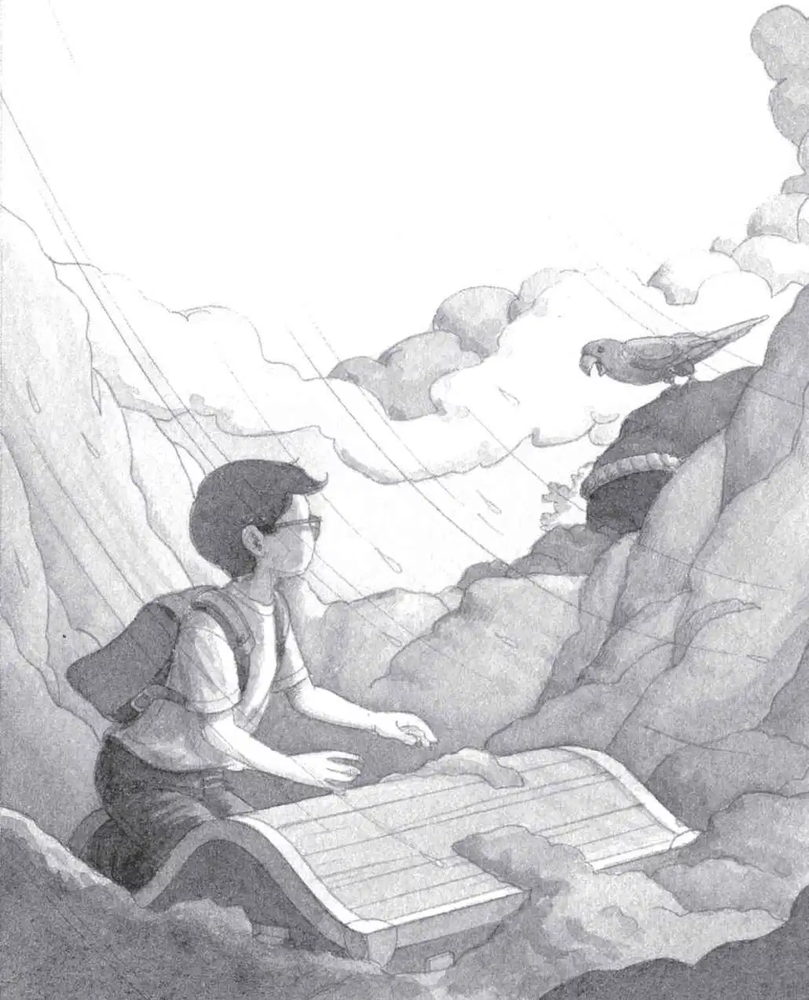

Pinky and Stinky tied their rope around the big rock.
The wind howled. The two pirates pulled. And pulled. And pulled.
“They need help!” said Jack.
“Aghh, let the dogs do the work!” growled Cap’n Bones.
“You’re not very nice to them,” said Annie.
“Who cares?” roared Cap’n Bones.
“Cap’n! We got it!” shouted Pinky.
They started pulling the rock across the sand.

“Now let’s dig where the rock was,” said Jack. “All of us!”
But Cap’n Bones ignored his suggestion.
“Dig, you dogs!” he shouted.
Pinky and Stinky started to dig. The wind blew even harder. There was going to be a thunderstorm.
“Oww! I got sand in me eyes!” Pinky whined.
“Oww! Me back hurts!” Stinky cried.
“Dig!” shouted Cap’n Bones. He held Jack and Annie with one hand. With the other he pulled out the gold medallion.
He tossed it at the two pirates. It fell into the hole.
“Dig for more of these, you swine!” he said.
Squawk!
“Look!” Annie said.
Polly was back! She was circling above them!
“Go back!” she squawked.
Stinky and Pinky looked up at the parrot. They scowled.
“Dig!” shouted Cap’n Bones.
“A big storm is comin’, Cap’n!” said Pinky.
“Go back!” said Polly.
“The bird’s an omen, Cap’n!” shouted Stinky.
“Dig, you dogs!” cried Cap’n Bones.
“Go back!” squawked Polly.
“The bird’s warning us!” shouted Pinky. “We’ve got to get to the ship before it’s too late!”
The two pirates threw down their shovels. They started running toward the rowboat.
“Mutineers! Come back!” shouted Cap’n Bones. He dragged Jack and Annie down the beach as he ran after his men. “Stop!”
But the pirates kept running. They got to the rowboat and pushed it into the sea.
“Wait!” cried Cap’n Bones.
Pinky and Stinky jumped into the boat. They started rowing.
“Wait!” Cap’n Bones let go of Jack and Annie. He ran into the water. “Wait, you dogs!”
He hauled himself into the rowboat.
Then the three pirates disappeared into the spray of the waves.
“Go back!” squawked Polly.
“She means us!” said Annie.
Just then the storm broke over the island. The wind howled. Rain fell in buckets.
“Let’s go!” cried Annie.
“Wait! I have to get the medallion!” shouted Jack. He ran to the hole dug by the pirates. He looked down in it.
Even in the dreary light, the medallion was shining.
Big, fat raindrops were falling into the hole, washing away the sand.
Jack saw a patch of wood.
Then the rain cleared away more sand. And Jack saw the top of an old trunk.
He stared. Was it Captain Kidd’s treasure chest?
“Hurry, Jack!” cried Annie. She was halfway up the tree house ladder.
“I found it! I found it!” cried Jack. “I found the treasure chest!”
“Forget the treasure chest!” said Annie. “We have to go now! The storm’s getting worse!”
Jack kept staring at the chest. Was there gold inside? Silver? Precious gems?
“Come on!” Now Annie was shouting from the tree house window.
But Jack couldn’t tear himself away. He brushed the rest of the muddy sand off the chest.
“Jack, forget the treasure chest!” cried Annie. “Let’s go!”
“Go back!” squawked Polly.
Jack looked at the parrot. She was perched on the black rock.

He stared into her wise eyes. He thought he knew her—knew her from somewhere else.
“Go back, Jack,” she said. She sounded like a person.
Okay. It was definitely time to go.
Jack took one last look at the treasure chest. He clutched the gold medallion. Then he took off, running toward the tree house.
His socks and rain boots were still there. He quickly pulled the boots on. He shoved the socks into his backpack.
The rope ladder was dancing wildly in the wind. Jack grabbed it.
The ladder swayed as Jack climbed. He was tossed this way and that. But he held on tight.
At last he pulled himself into the tree house.
“Let’s go!” he cried.
Annie was already holding the Pennsylvania book. She pointed to the picture of Frog Creek.
“I wish we could go there!” she shouted.
The wind was already blowing hard. But now it blew even harder.
The tree house started to spin. It spun faster and faster.
Then everything was still.
Absolutely still.